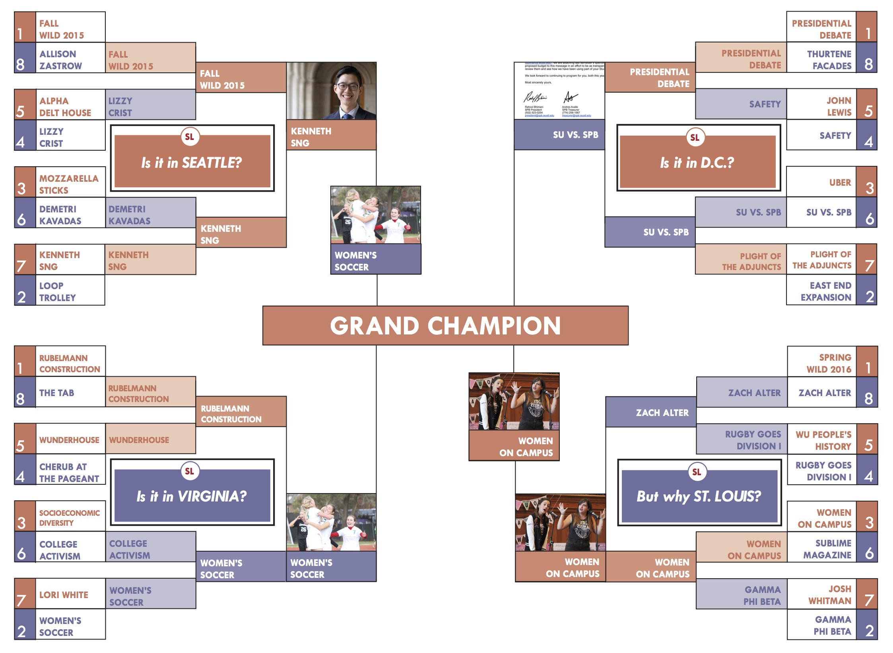

Here’s a quick list of all the things Lin-Manuel Miranda has done over the past 365 days: been named a recipient of the MacArthur Genius Grant; written, directed and starred in one of the most successful musicals of all time,1 won a Pulitzer prize; performed for the Obamas,
became friends with the Obamas,
earned the ability to say “Yo Barry O” and finally received nominations for a record 16 Tony awards,2 including best male lead.
Despite all of that, despite literally being the most accomplished human being currently walking the face of the earth, do you know what Lin-Manuel Miranda hasn’t done?
He hasn’t won a duel for his honor.
Yeah, yeah, he can sir and ma’am, talk less and smile more, but at the end of the day, Miranda—and by that I mean his character Alexander Hamilton—cannot survive a duel with good ole Aaron Burr.
Night in and night out, sometimes twice a day, Miranda is killed on stage by Leslie Odom Jr. Instead of being universally recognized as the architect of this country, Hamilton has become just that one non-president on the back of the $20. Yes, I am conflating two very different people, but hey, Miranda didn’t have to choose to forever align himself with Hamilton.
Kenneth F---ing Sng, the man who stared a petulant and uncompromising WILD in the eyes and ended it without apology.3
Granted this is all speculation, but that’s the fun of duels. Who shot first? Probably WILD, maybe Donald Trump, but definitely not Kenneth—who is never the aggressor, always the winner.
For that, Kenneth wins once again. Fall 2015 WILD can use all the Scandinavianmagic it wants, but vengeance never triumphs over love.
Once upon a time, in the late 1960s and 1970s in northern California, there was a string of murders—men and women all between the ages of 16 and 29. Sound familiar?
Well, this serial killer was5 an interesting one. Following each murder, the killer sent letters to local press in the area—under the pseudonym of “Zodiac.” Soon, he became known as the Zodiac Killer. Sound familiar now? I thought so.
On the other side of the country, in Lynchburg, Va. (and more than 40 years later), an unfortunate looking man (it’s like his cheeks were squeezed by older relatives a little too much as a child and just sort of stayed that way) announced his bid for the presidency in 2016. What his name? The Zodiac Kil—I mean, Ted Cruz.
Cruz bares such an uncanny resemblance to the famous Zodiac Killer that a strange majority of people believe it’s him.6 Cruz may have been born in 1970 (making him either a fetus or an infant at the time of the murders) but he STILL has been able to (unwittingly) convince us that he’s the mastermind serial killer.
I mean I’m not saying Ted Cruz is the Zodiac Killer. But, like, you’ve seen the evidence. How F---ED UP would it have been if the ZODIAC KILLER was INVITED—yes, EXTENDED AN INVITATION—by our esteemed University to come to a lodging ground for 16-29 year olds. F---ing incredible, that’s what. Unfortunately, he pulled out of the running on Tuesday. Unfortunately, that means this serial killer won’t be joining us here in St. Louis.
I concede that this is probably a good thing. A serial killer on campus is not such a great idea. But now that Cruz is out, guess who’s in? Trump. Most likely gracing the new Athletic Complex stage next October is The Donald himself.
Does this concern you? 7 Scared a racist, sexist “billionaire” might take control of the free world? 8 Does this make you fear for our political system? 9 Is our political system flawed?10
While our federal political system might be in shambles, our school political system (oddly enough) seems to be working better than it has been in the past. For one, a majority11 of the year’s SU Exec positions were contested, Student Life’s SU endorsements were right12 and the budget allocation process has become more transparent.13
When Trump and his opponents fight, nothing comes of it but heightened media coverage. When SU and SPB fight, campus institutions get canceled and debate programming gets funded. That’s progress. That’s the democratic process at work. That’s SU vs. SPB moving on.—Noa Yadidi
(1) Rubelmann Construction vs. (2) Women’s Soccer
I grew up playing soccer. Like many people who grew up playing soccer, my dad was my coach. Unlike many people who grew up playing soccer, my dad was my coach through my teenage years. This arrangement had its pros and cons. For example: I always got to start.14 The con? I wasn’t allowed to block his voice out, i.e. I actually had to listen to him. My dad also thinks he’s funny.15 He’s funny like all dads are—aka not funny. Thus, it makes sense that my dad’s favorite thing to yell at me throughout my high school years was: “My grandmother can run faster than that, and she only has one leg.” True story.
Ruby, on the other hand, cannot only balance on one leg. Mostly because it doesn’t have legs. It also can’t run, for the same reason. Ruby also doesn’t have a grandmother, but that seems beside the point.
The point is, if Ruby tried to balance on one leg, regardless of the fact that it doesn’t have legs, it would fall, and it did fall because they demolished its nonexistent legs. Are you confused yet? Good. “No blood, no ambulance,” as my dad would say.
Therefore, soccer moves to the Final Four for the second time this year, and we know how that went last time.—Noa Yadidi
(8) Zach Alter vs. (3) Women on Campus
To be honest, I think we’re all a little surprised that Zach made it this far.16 After all, he is only a freshman. One, single, lone freshman. As we’ve seen, his accomplishments embarrass pretty much all other freshmen (...and sophomores...and juniors...and seniors), but here his Cinderella story comes to a close. Why? For that exact reason. He’s only a freshman. It’s too early for him to peak.17
With the trajectory he’s had, who knows what he might accomplish by the time he’s a senior. As a sophomore, he might sell out the Scottrade Center. Junior year? Take the weekend off to jet to Coachella on Avicii’s private plane. In Zach’s senior year, not only will the Business of Entertainment probably be a major—but DJ Alter? Headlining LouFest.
With all those possibilities, why let him win on his few meager freshman accomplishments? We can’t do him this disservice. Sorry, Zach, but it’s the end of the road for you.—Noa Yadidi
Before we even started this bracket, Rembert knew it would come down to this. He knew that in the Final Four would be the people that walk among us every day. The superstars that are our role models, our idols, our everythings.
He knew, that in any sort of bracket, you’re going to hit a wall. You’re going to hit a wall very hard. Like crash test hard. Like re-entering Earth’s atmosphere after a moon landing hard. Like Bio 2960 hard. It’s gonna f--- you up.
And to be honest, it has. We have stared at this matchup for approximately 128 consecutive hours,18 trying to determine who the hell wins. They’re both f---ing awesome; how do you differentiate that?
Then, I remembered another tweet I had once seen. A tweet I had favorited, even.
went jogging today although it feels more accurate to say i stumbled around my neighborhood crying & sweating for 12 mins then i walked home
Rembert’s Grantland contemporary, Shea Serrano, embodied everything I’ve ever felt about athletics in less than 140 characters. And, you know what, he also revealed to me why women’s soccer deserves to be in the championship.
Forget everything you think you know about soccer;19 the only true foundation of the sport is running. For 90 minutes. With an indeterminate amount of extra time after those 90 minutes. 20
That anybody can do that at all blows my mind and earns my undying love and respect. That people can do it AND kick a ball AND be better than other people who are also very good is actually so impressive.
It’s a travesty that sports’ stars accomplishments have become so normalized that we all think we can do what they do. We can’t. Or at least I can’t. But I’m the one in charge.
Kenneth is a beautiful soul and fantastic person, but he’s also in this bracket largely based on potential. Kenneth’s next year as president could be amazing or horrible; we just don’t know. Either way—he’ll be so much more interesting to talk about next year.
What we do know is that the women’s soccer team proved themselves this year, and for that, they’re going to the ‘ship for another go-round.
—Wesley Jenkins
(6) SU vs. SPB vs. (3) Women on Campus
So, the Women on Campus entry has had a bit of an easy run to the Final Four, probably the easiest of any of the remaining contestants. In a way, this was planned, but it also wasn’t. It’s easy to point out the flaws in one thing when compared to another and conclude that the former is better than the latter. This is a little principle called moral relativism.
In this case, Women on Campus has advanced relatively unchallenged because morally, the progress of gender equality is just better. But you can’t just cake walk your way through the Final Four. Now, Women on Campus has to prove itself, so let’s go through some facts, shall we?
Fact: Women, Gender, and Sexuality Studies became a department this year. Fact: Gamma Phi Beta colonized to give students more access to Greek life.21 Fact: OWN IT held a summit this fall, receiving the largest allocation from SU Treasury for this year’s Speaker Series to bring ELLEN PAGE. Fact: Annie Pitkin, Lizzy Crist, Allison Zastrow, Daisy Ogede have all made tremendous impacts on their respective sports’ teams and on DIII women’s sports across the country. Fact: Students came in droves to support a Planned Parenthood rally.
It’s fitting that Women on Campus is going against SU and SPB’s brief tiff here because both of those organizations has shown a definite lack of gender diversity. While the two groups are arguing about who’s at fault for WILD, there is only one woman on SU Exec, and she is actually the only woman who even ran for a position. With SPB, not one woman was brought to campus this year for any of their entertainment events—WILD, comedy show, Spring Concert or Fall Concert. Basically, they’re missing the bigger picture.
While the SU vs. SPB drama was certainly entertaining and promoted greater transparency on campus, the fact that both groups are still struggling with the same buzzword22 decade after it was introduced prevents them from winning this round. Greater issues are being addressed these days, and women on campus are at the forefront. Women not being represented in the groups should not be blamed on the women, but on the groups. For that, Women on Campus moves on to the final round.—Wesley Jenkins

Final Two
(2) Women’s Soccer vs. (3) Women on Campus
So this final matchup is really quite simple to call. It’s not a rout by any means, but there also really isn’t much debate left to be had.
I could cite the symmetry of women’s soccer losing in championship again as the reason for the decision, but that just seems cruel, unusual and a bit of a cop-out. Instead, I’m going to take a different cop-out approach to this matchup.
You see, women’s soccer is just another part of the progress and the recognition that women have received this year. Yes, their captivating run to the national championship may be one of the most visible, tangible part of that progress, but it’s still just a part. Women’s soccer accomplished so much this year, but women on campus accomplished just so much more. Without a doubt, Women on Campus won the 2015-2016 school year.
I call this decision a cop-out because of course Women on Campus would defeat a part of its very own entry—it’s just logical. But it also feels a bit like giving out a participation ribbon at the Super Bowl, or the World Series or the Women’s World Cup, even. There’s nothing dynamic about a participation ribbon. So let’s end with a story instead—one that demonstrates exactly why women on campus should win.
Last October, Alpha Phi, WUSLam, and the newly-formed WGSS Department brought duo “Speak Like a Girl” to perform poetry about and speak on modern feminism. The duo comprised of Megan Falley and Olivia Gatwood performed a piece called “Princess Peach Speaks.”
The duo comprised of Megan Falley and Olivia Gatwood performed a piece to a room of women who would later stand up as a Greek organization against the problematic legislation of the Safe and Fair Campus Acts. The duo comprised of Megan Falley and Olivia Gatwood performed a piece to a room including five amazing women poets who would later represent themselves and the University at the College Unions Poetry Slam International in Austin, Texas.
The duo comprised of Megan Falley and Olivia Gatwood said:
What makes you think every time Princess doesn’t answer it means she needs your help? Can’t a woman get some alone time around here to deal with her s---?
What s---, you ask? I don’t know—body image, rape culture, motherhood, gender roles, the fact that no one will let her wear anything but a pink dress?
Women on campus won the 2015-2016 school year because they dealt with this same s---—rape culture, gender roles and everything else—and time and again, they shut it the f--- down.
Yes, there’s still work to be done, but there’s also still work being done, and in what way is it my place to tell the women of Wash. U. how to deal with their s---?
1. This bracket started as an off-the-cuff idea in mid-March23 and turned into something gigantic (i.e. my own power trip.)
2. Even though Women on Campus won, and deservedly so, that doesn’t mean the other entries are losers. They are just a moderate mix of loser and winner.
3. Be proud of your campus. People are doing some pretty kickass things.
4. But don’t be too proud because there’s always room for improvement (the only moral in an otherwise non-serious project).
8. Thank you to everyone who wrote (@staff) or contributed in other ways (like Managing Editor Maddie Wilson for the amazing cover graphic and our lovely copy chiefs for catching our mistakes—both in print and on social media).
9. Special thanks to Senior Online Editor Rohan Bhansali for designing the website and giving us a bunch of cool toys to play around with.24
10. Thanks to all of you for reading this behemoth of a project. A piece like this has been a dream of mine for years, and without the StudLife staff, Noa or our readership, it would have been a lot of effort for absolutely nothing. I still would’ve done it though. You better believe that.
Until next year,
Wesley Jenkins
Idk what I'll do in my free time now and that's just not an exaggeration